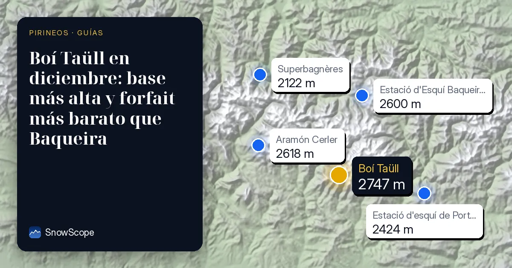

Boí Taüll en diciembre: base más alta y forfait más barato que Baqueira
Para un viaje de esquí de bajo coste en diciembre en España, Boí Taüll ofrece un inicio más alto y un ticket diario más bajo que Baqueira Beret. Sus remontes empiezan a 2039 m con un forfait de adulto de 1 día a 49,00 EUR, frente a la base de 1504 m y el ticket de 74,00 € de Baqueira Beret. Aun así, la nieve de principios de diciembre es una apuesta, así que el momento importa.
Consulta la previsión de nieve en tiempo real de Boí Taüll en la app SnowScopeEspesor de nieve, alertas de nieve polvo y mapa 3D, gratis.
Empezando alto a 2039 m
Una base alta reduce el riesgo de caminar sobre hierba hasta el primer remonte, y ninguna estación de nuestra lista del Pirineo empieza más arriba. La zona cartografiada de Boí Taüll va de 2039 m a 2747 m, con 708 m de desnivel, 35 km de pistas y 9 remontes. La primera nieve duradera suele llegar el 9 de noviembre a la base, el 4 de noviembre a media montaña (2393 m) y el 3 de noviembre a la cima.
La estimación de nieve de hoy, 13 de noviembre, muestra un inicio tranquilo: 0 cm en la base y 5 cm en media montaña y la cima, con 0 cm, 4 cm y 6 cm de nieve nueva en los próximos 7 días. Del 13 al 26 de noviembre, el pronóstico de dos semanas varía de 13 a 36 cm en media montaña y más arriba, nunca una promesa.

Probabilidades de nieve semana a semana en diciembre
Según nuestro historial de nieve de 46 inviernos pasados (1980-81 a 2025-26), diciembre empieza escaso. En la base de 2039 m, un diciembre habitual promedia 16 cm (17 cm el 15 de diciembre), por debajo de 1 cm en un invierno pobre (1 de cada 10) y por encima de 52 cm en uno abundante. Media montaña (2393 m) promedia 25 cm (24 cm el 15 de diciembre; pobre por debajo de 3 cm, abundante por encima de 71 cm), mientras que la cima a 2747 m promedia 34 cm (32 cm el 15 de diciembre; pobre por debajo de 4 cm, abundante por encima de 90 cm).
Semana a semana, las fechas tardías compensan. Del 1 al 7 de diciembre, 30 cm o más ocurren en el 15 % de los inviernos pasados en la base, 35 % en media montaña y 41 % en la cima (50 cm o más: 2 %, 11 %, 20 %). Del 8 al 14 de diciembre, 30 cm o más alcanzan el 24 %, 41 % y 43 % (50 cm o más: 9 %, 17 %, 30 %). Para el 15-21 de diciembre, esas probabilidades de 30 cm o más suben al 30 %, 48 % y 57 % (50 cm o más: 9 %, 22 %, 37 %). Del 22 al 28 de diciembre, 30 cm o más alcanzan el 39 %, 54 % y 63 %, con 50 cm o más en el 15 %, 33 % y 46 %.
Lo que cuesta el pase
En el sitio oficial de Boí Taüll, un pase de adulto (25-64 años) de 1 día cuesta 49,00 EUR. Los pases de varios días y el alojamiento no se verificaron, así que usa esa tarifa diaria para planificar y consulta el sitio oficial antes de reservar. Para 35 km de pistas mapeadas, mantiene los costes de los remontes modestos.
Contra Baqueira Beret
Baqueira Beret es más grande, con 154 km de pistas mapeadas, 36 remontes y 1096 m de desnivel entre 1504 m y 2600 m. En su sitio oficial para 2026-27, un 'Baqueira Ticket' de adulto de 1 día cuesta 74,00 € (70,00 € con la tarjeta recargable 'Baqueira Pass'), y un 'Baqueira Ticket' de 6 días cuesta 359,00 €. El pase de 49,00 EUR de Boí Taüll mantiene los costes diarios más bajos.
Sobre la nieve de diciembre, la altura de Boí Taüll supera a Baqueira Beret en todos los niveles. La base de 1504 m de Baqueira Beret promedia 8 cm (9 cm el 15 de diciembre; 0 cm en un invierno pobre, por encima de 37 cm en uno abundante), con 30 cm o más en el 4 %, 11 %, 15 % y 20 % a lo largo de las cuatro semanas de diciembre. Su media montaña a 2052 m promedia 20 cm (19 cm el 15 de diciembre; pobre por debajo de 2 cm, abundante por encima de 56 cm), con 30 cm o más en el 22 %, 30 %, 35 % y 41 %. A 2600 m, promedia 30 cm (30 cm el 15 de diciembre; pobre por debajo de 3 cm, abundante por encima de 77 cm), alcanzando 30 cm o más en el 39 %, 46 %, 52 % y 59 %, y 50 cm o más en el 13 %, 22 %, 30 % y 37 %.
El invierno pasado y la visión a largo plazo
El diciembre del invierno pasado (2025-26) fue escaso en Boí Taüll, promediando 9 cm en la base, 14 cm en media montaña y 19 cm en la cima. En nuestro historial de nieve, diciembre varió desde 2016-17 (1 cm en la base, 2 cm en media montaña y cima) hasta 2021-22 (67 cm, 94 cm y 121 cm). Los inviernos habituales alcanzan picos de 77 cm, 109 cm y 154 cm a lo largo de 142, 162 y 167 días de nieve.
Comparar los primeros 15 inviernos (1980-81 a 1994-95) con los últimos 15 (2011-12 a 2025-26) muestra una pequeña caída en los valores medios de diciembre: de 15 cm a 12 cm en la base, de 22 cm a 20 cm en media montaña y de 30 cm a 28 cm en la cima. El principio de diciembre sigue siendo incierto, así que esquía alto y elige semanas posteriores.
Consejos para esquiadores
- Apunta al 15-21 de diciembre o 22-28 de diciembre, cuando la cima a 2747 m alcanza 30 cm o más en el 57 % y 63 % de los inviernos pasados en lugar del 41 % del 1-7 de diciembre.
- Esquía entre media montaña (2393 m) y la cima (2747 m), donde las profundidades habituales de diciembre son 25 cm y 34 cm en lugar de 16 cm en la base.
- Reserva tu pase de adulto (25-64 años) de 1 día a 49,00 EUR en el sitio oficial de Boí Taüll, y comprueba allí las tarifas de varios días.
- Lee el boletín de aludes cada mañana antes de salir fuera de pista, especialmente después de tormentas por encima de 2393 m.
Más mapas (sitios externos)
Referencias y créditos
- Boí Taüll, official lift pass prices (tarifes) pirineu365.cat/boitaull/estacio/tarifes/
- Baqueira Beret, official prices (tarifas), season 26-27 www.baqueira.es/es/tarifas
- SnowScope, December snow at three heights and today's snow map snowscope.app/
Sobre estas cifras
Nieve actual y tendencia a dos semanas: previsiones de SnowScope (tendencia de ECMWF y GFS, un rango, no una promesa). Remontes y pistas: cartografía de OpenSkiMap. Precios: las páginas oficiales de abajo, consultadas el 2026-11-13; los precios pueden cambiar, compruébalos antes de reservar.
Boletines oficiales de aludes: ICGC – Butlletí de perill d'allaus (Catalunya)
Citar este informe
Para investigación, docencia o prensa: cifras y gráficos reutilizables libremente bajo CC BY 4.0 con esta cita.
SnowScope (2026), Boí Taüll en diciembre: base más alta y forfait más barato que Baqueira, https://snowscope.app/blog/es/2026/11/boi-taull-december-ski-highest-pyrenees-base-2026.html, consultado el 2026-11-14
SnowScope (Atlas Labs). (2026, November 14). Boí Taüll en diciembre: base más alta y forfait más barato que Baqueira. SnowScope snow reports. https://snowscope.app/blog/es/2026/11/boi-taull-december-ski-highest-pyrenees-base-2026.html
BibTeX
@misc{snowscope2026boitaulldecemberskihighe,
author = {{SnowScope (Atlas Labs)}},
title = {Boí Taüll en diciembre: base más alta y forfait más barato que Baqueira},
year = {2026},
month = nov,
howpublished = {\url{https://snowscope.app/blog/es/2026/11/boi-taull-december-ski-highest-pyrenees-base-2026.html}},
note = {Published 2026-11-14 20:01 UTC; accessed 2026-11-14}
}· CC BY 4.0 · Métodos, datos y herramientas →
Boí Taüll: nieve y temperatura según la altura, este invierno vs el pasado (herramientas) →
Sigue Boí Taüll
Gratis: un aviso cuando llega la nieve y la previsión cada mañana.